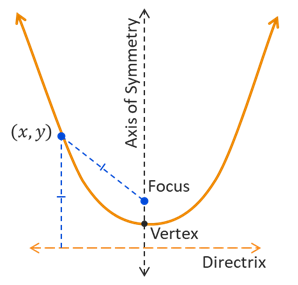

Parabolas
Conic Sections
Conic Sections
You should already be familiar with parabolas from your previous studies in math, but we want to view them from a slightly different perspective. Let's start by looking at parabolas that are located at the origin. Then we will look at what happens if they are shifted to other locations in the \(xy\)-plane.
A parabola is a curve formed by all points that are an equal distance from a fixed point called a focus and a fixed line called a directrix.
The vertex of a parabola is the point located on the curve that is closest to both the focus and directrix. The graph of a parabola is symmetric across the line running through the vertex that is perpendicular to the diretrix, and we call this line the axis of symmetry.
The equation of a parabola has two forms, depending on whether the parabola is oriented vertically or horizontally. If you remember from your earlier math classes, the graph of \(y = ax^2\) is oriented vertically, opening upwards if \(a > 0\) and downwards if \(a < 0\). Similarly, the graph
The standard equations of a parabola with vertex at the origin have the following form.
The main difference in these two equations is whether the parabola is oriented horizontally or vertically.
©2025 M4thG33x (new window) Some Rights Reserved.